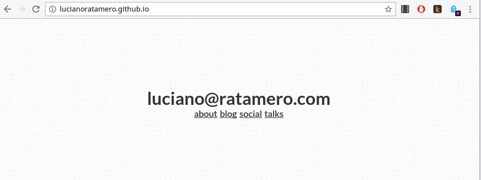

como só se precisa lidar com um projeto, resolve-se rápido, mas tende-se a ter mais acoplamento
baixo custo, com aumento exponencial
acoplamento => baixa flexibilidade
arquitetura frankenstein
o backend vai sempre tender a resolver tudo no backend, e o front, no front, então você chega ao ponto de não saber onde o bug tá por cada dev dar sua solução
gerência complicada de equipes => feudos
já que tudo tende a ser acoplado, só quem fez sabe o que aquela parte do código faz (se é que quem fez se lembra)
coordenação complicada de tarefas => monolítico
por termos feudos, se fulano está ausente, ferrou
desacoplada
nodejs
react-redux / angular-restangular
rede
django
rest framework
características da estratégia desacoplada
produto com cara de app

rápida prototipagem de interface
você pode desenvolver só a interface enquanto arquiteta com mais cuidado o backend
baixo custo a curto prazo, com aumento linear
não há a bola de neve, pois as equipes são separadas e mais flexíveis
fácil gerência de equipes
você sabe quando e quem contratar e para quem enviar cada bug
difícil coordenação de tarefas
se houver alguma dessincronia entre as equipes, teremos atrito entre elas, além de um senso de "times"
decisões prévias
não há tempo para se ponderar qual framework usar, pois a decisão deve ser tomada logo de cara
alta aposta no produto
por conta das decisões prévias e da alta complexidade de front, quem usa essa estratégia precisa ter uma visão bem definida do futuro do produto
híbrida
django
templates + js
API views
rest framework
nodejs
react-redux / angular-restangular
exemplo
projeto > app django + API > templates > app nodejs
pode parecer uma péssima idéia, mas juro que não é
características da estratégia híbrida
produto com a cara que quiser
quer cara de app? faz uma app. não quer? não precisa. quer fazer com API? faz. não quer? deixa pro futuro. não sabe se usa react ou angular? faz com django, projetando bem seu contexto.
aposta flexível no produto
desde que você tenha visão do que pode se tornar desacoplável no futuro, tá de boas.
custo maior a curto prazo, dependente da equipe a longo
se sua equipe tiver projetado bem o que pode ser desacoplável, você não terá problemas com aplicação django monolítica. não em relação ao front, pelo menos.
fácil gerência de equipes
elas podem ser totalmente separadas, mas o front vai ter que saber um pouco de back e o back vai ter que saber um pouco de front.
fácil gerência de tarefas
se todos têm uma noção geral do projeto, tapar buracos é fácil
te força a pensar na arquitetura em vez da ferramenta
coisa que a gente geralmente não faz
na hora de escolher, lembre das maiores dependências
acoplada: produto
desacoplada: empresa
híbrida: equipe
use a estratégia acoplada quando:
tiver equipes/produtos estáveis
tiver grande entrada e saída de projetos
fizer projetos pessoais/descartáveis/burocráticos
use a estrategia desacoplada quando:
for uma startup
tiver equipes pequenas/remotas
tiver proximidade de domínio entre devs e gerentes